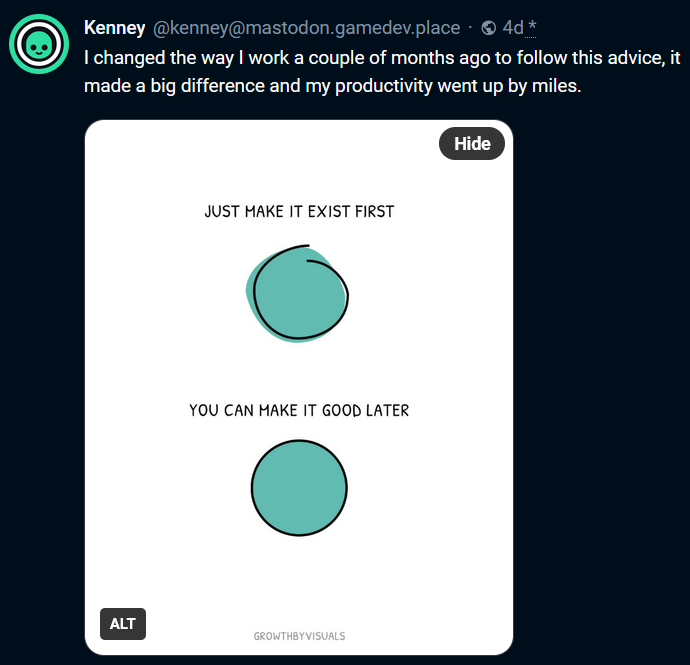
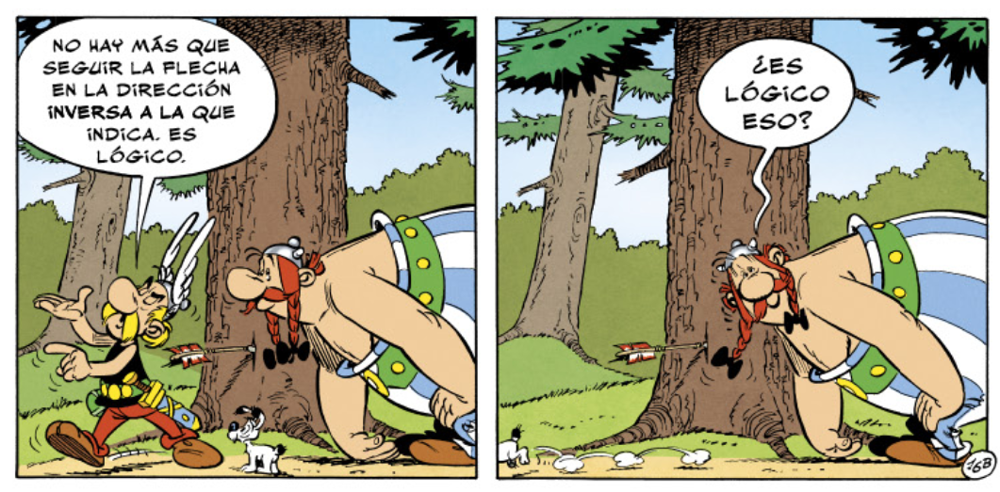

Inventario de sistemas de información
Un conjunto de ideas
más o menos dispersas
Muy muy muy
abiertas a discusión
Índice
- Contexto y definiciones
- Características del Inventario
- Fuentes de datos iniciales
- Ejemplo (Turismo)
El contexto
Yo soy yo
y mis circunstancias mi contexto
José Ortega y Gasset
(En un universo alternativo
en el que estudió programación)
Qué es un sistema de información
Conjunto organizado de elementos interrelacionados (personas, procesos, datos, tecnología y recursos) que trabajan juntos para recopilar, procesar, almacenar, distribuir y gestionar información con el fin de apoyar la toma de decisiones, la coordinación operativa y el control dentro de una organización.
Descargo de responsabilidad
Todos los modelos están equivocados, pero algunos son útiles.
—
George E. P. Box
Un sistema de información
- No es equivalente una aplicación informática.
- Pero el escenario más habitual es
que haya una única aplicación informática asociada al
sistema de información. No obstante ...
- ... Puede incluir más de una aplicación informática
- ... Puede no tener una aplicación informática
Ejemplo de sistema de información
(y curiosidad histórica)
Los impuestos campesinos
En la Inglaterra Medieval, el Exchequer (la hacienda inglesa) necesitaban organizar la recolecta de los llamados impuestos campesinos
Usaban una tecnología llamada palos de conteo
Un palo de conteo consiste en un palo (de sauce, generalmente) dividido en dos.
Los palos de conteo
- En el palo se tallaba la descripción de la deuda
- Luego se dividía en dos, a lo largo
- El deudor se quedaba con una mitad, llamada foil
- El acreedor se quedaba con la otra, llamada stock (palabra que hoy se sigue utilizando para referirse a las deudas del gobierno británico)
Y esto es relevante porque ...
Los palos tallados eran una forma de registrar deudas con un sistema de información simple y efectivo
Como dato histórico curioso
El uso de palos
para llevar la contabilidad
se mantuvo en uso hasta 1826.
Se había estado usando
durante más de 600 años
Eso son muchos palos
El incendio del Parlamento británico de 1834
En 1834, se dio la orden de quemar los palos almacenados, que ocupaban varios sótanos del Palacio de Westminster
Spoiler: Sale mal
El fuego se descontroló y destruyó casi en su totalidad el palacio (que incluía, entre otras instituciones, el Parlamento Británico)
Ejemplos de Sistemas de Información
En el Gobierno de Canarias
- Concesión de licencias, permisos, autorizaciones, comunicaciones previas y declaraciones responsables
- Registros administrativos
- De gestión financiera y presupuestaria
- De gestión de recursos humanos
- Registro de entrada y salida
- Citas previas
- Gestión de sanciones, inspecciones o auditorías
- Plataforma para la tramitación electrónica
- De información sectoriales (Ej. Educación: sistema de becas o de matrículas) o historial académico. Salud: historia clínica. Bienestar Social: ficha social única)
- Indicadores comunes para la DpO
Características del Inventario
de sistemas de información
El Inventario de sistemas de informacion
- Es un subproducto
- Esto no significa que no sea importante
- Requiere mantenimiento
- Debe crecer de forma orgánica
- Debe ser único y global
¿Orgánico?

Como curiosidad...
- El inventario de sistemas de información es, en sí mismo, un sistema de información
- Por tanto, debe estar incluido en el Inventario
Propuesta de nombre y logotipo

Pistas iniciales
Para identificar posibles sistemas de información

Apoyo de la Unidad del Dato
Pistas iniciales
(Estamos abiertos a sugerencias)
- SICAC
- Datos Abiertos de Canarias
- Gestión Documental
- CMDB
- RASGO
- GitLab
- Listado de registros
- DIRCAC
- Cartas de servicios (Servicios al ciudadano)
- Mapas de servicios (Servicios internos)
- RAT (Registro de Actividades de Tratamiento)
- Políticas de Seguridad de la Información
SICAC
Inventario de actuaciones administrativas, tanto externas como internas, que gestiona la A.P. de la CAC. Recopila la información básica de cada actuación administrativa (plazo de presentación, documentación a presentar, órgano de resolución, normativa aplicable, recursos...) a fin de facilitar su conocimiento por la ciudadanía.
▲ Completo (En su ámbito) ▲ En base de datos
Datos abiertos de Canarias
Punto de encuentro para la publicación de datos del sector público canario en formatos abiertos, gratuitos y reutilizables.
▲ Fácil acceso ▲ En base de datos
Gestión documental
Gestión documental. Series documentales
▲ Fácil acceso ▲ En base de datos?
Configuration Management Database (CMDB)
“... una base de datos que contiene detalles relevantes de cada ítem o elemento de configuración, y de la relaciones entre ellos, incluyendo equipo físico, software y la relación entre incidencias, problemas, cambios y otros datos del servicio de TI.”
▲ Actualizado ▲ En base de datos
RASGO
Es una base de datos antigua y aparentemente no mantenida, pero de la cual es posible que se pueda obtener alguna indicación
▼ Obsoleto / no actualizado ▲ En base de datos
GitLab
El repositorio de software del Gobierno de Canarias
▲ Parseable / Fácil acceso
DIRCAC
El DIRCAC es la herramienta corporativa Directorio de Unidades Administrativas y Oficinas de Registro y Atención a la Ciudadanía. Es la referencia de datos de la estructura organizativa del gobierno en el DIR3 (Directorio Común de Unidades Orgánicas y Oficinasn
▲ Completo (en su ámbito) ▲ En base de datos
Cartas y mapas de servicios
Cartas de servicios
Relación de servicios ofrecidos a la ciudadanía
Mapa de servicios
Relación de servicios ofrecidos internamente
▲ En base de datos?
RAT - Registro de Actividades de Tratamiento
Los responsables y encargados del tratamiento de datos personales deberán mantener un registro de las actividades de tratamiento efectuadas bajo su responsabilidad. Este registro deberá contener la información que recoge al respecto el artículo 30 del RGPD.
—
Definición de RAT de la Agencia Española de Protección de Datos
▼ No Parseable ▼ Acceso complicado
Ejemplo - Turismo
Consejería de Turismo y Empleo
Turismo / SICAC
No disponible
Turismo / Datos abiertos
- Agencias de viaje on line
- Intermediadores turísticos
- Agencias de viaje
- Establecimientos extrahoteleros de tipología vivienda vacacional
- Establecimientos extrahoteleros sin viviendas vacacionales
- Establecimientos de restauración
- Intermediadores turísticos on line
- Embarcaciones de observación de cetáceos
- Establecimientos hoteleros
- Actividades de turismo activo
- Actividades complementarias
https://datos.canarias.es/catalogos/general/group/turismo?q=&organization=consejeria-de-turismo
Turismo / Procedimientos sede (1/6)
- 0930 - Declaración de Fiesta de Interés Turístico de Canarias
- 1071 - Aplicación singularizada excepciones al estandar de densidad en suelo urbano
- 1287 - Dispensa excepcional de alguna de las condiciones exigidas como mínimas a los distintos establecimientos turísticos de alojamiento
- 1781 - Expedición del título de técnico de empresas y actividades turísticas (T.E.A.T.)
- 2688 - Declaración previa a la prestación de servicios por Guías establecidos en otros Estados de la Unión Europea.
- 3000 - Ampliación directa de idiomas en habilitación de Guías de Turismo
- 3001 - Inscripción en Pruebas para Ampliación de idiomas por Guías de Turismo de Canarias ya habilitados.
- 3002 - Modificación de datos de Guías de Turismo habilitados
- 3003 - Reexpedición de Carné de Guía de Turismo de Canarias
- 3004 - Expedición de Certificación acreditativa de condición de Guía de Turismo de Canarias
- 3084 - Inscripción en pruebas de Habilitación de Guías de Turismo de Canarias.
https://sede.gobiernodecanarias.org/sede/procedimientos_servicios/tramites
Turismo / Procedimientos sede (2/6)
- 3085 - Reconocimiento de Cualificaciones Profesionales de Guías de Turismo de otros esta
- 3118 - Comunicación de inicio de actividad turística complementaria
- 3120 - Declaración Responsable de inicio de actividad de observación de cetáceos con fines turísticos
- 3123 - Comunicación de modificación de datos de actividad de intermediación turística
- 3124 - Comunicación de cese de actividad de intermediación turística
- 3275 - Comunicación modificación de datos de actividad de observación de cetáceos con fines turísticos
- 3276 - Comunicación de cese de actividad de observación de cetáceos con fines turísticos
- 3381 - Comunicación de modificación de datos de actividad turística complementaria
- 3383 - Comunicación de cese de actividad turística complementaria
- 3715 - Subsanación de presentación de candidaturas para la concesión de los Premios de Turismo "Islas Canarias"
- 4175 - Acreditación de Entidades facultadas para emitir informes técnicos turísticos
- 4176 - Modificación de datos de entidades facultadas para emitir informes técnicos turísticos
https://sede.gobiernodecanarias.org/sede/procedimientos_servicios/tramites
Turismo / Procedimientos sede (3/6)
- 4178 - Cese de Entidades facultadas para emitir informes técnicos turísticos
- 4180 - Presentación de informes técnicos turísticos
- 4665 - Procedimiento sancionador en materia turística
- 4776 - Prueba de aptitud para el reconocimiento de cualificaciones profesionales de guías de turismo de la Unión Europea (UE)
- 4781 - Expedición de certificación académica de estudios de Técnico de Empresas y Actividades Turísticas (TEAT)
- 4782 - Expedición de Duplicado de título de Técnico de Empresas y Actividades Turísticas (TEAT)
- 4969 - Incentivos económicos regionales para la correción de desequilibrios económicos interterritoriales
- 5548 - Declaración responsable de inicio de la actividad de Vivienda Vacacional
- 5550 - Denuncia o quejas sobre establecimientos turísticos
- 5729 - Actuaciones de Inspección en materia Turística
- 5984 - Declaración responsable de inicio de actividad de intermediación turística
https://sede.gobiernodecanarias.org/sede/procedimientos_servicios/tramites
Turismo / Procedimientos sede (4/6)
- 5985 - Declaración responsable de inicio de actividad de Agencia de Viajes
- 6252 - Comunicación de modificación de datos de actividad de agencia de viajes
- 6253 - Comunicación de cese de actividad de agencia de viajes
- 6500 - Autorización previa del Gobierno a proyectos de establecimientos de menos de 5 estrellas
- 6638 - Reclamaciones electrónicas en establecimientos turísticos
- 6654 - Obtención de hojas de reclamaciones para titulares de establecimientos o actividades turísticas
- 6663 - Subvenciones "Canarias Fortaleza" destinadas a financiar los gastos ocasionados en los establecimientos alojativos turísticos con motivo de las obras de adaptación necesarias para garantizar la seguridad frente al Covid-19
- 6905 - Recursos administrativos en materia de Turismo
- 7427 - Presentación hoja de reclamación en establecimientos turísticos
https://sede.gobiernodecanarias.org/sede/procedimientos_servicios/tramites
Turismo / Procedimientos sede (5/6)
- 7509 - Concesión de subvenciones directas a entidades locales para la ejecución de los Planes Locales de Sostenibilidad Turística en convocatoria extraordinaria, con cargo a fondos Next Generation EU
- 7687 - Concesión de subvenciones destinadas a titulares de alojamientos turísticos con el objeto de financiar proyectos de eficiencia energética y economía circular con cargo a fondos Next Generation EU.
- 8895 - Subvenciones destinadas a financiar proyectos de estrategia de resiliencia turística en Canarias dentro del Programa de actuaciones con entidades locales en infraestructuras turísticas, en el marco del Plan de Transformación y Resiliencia
- 9218 - Subvenciones para financiar proyectos de la estrategia de resiliencia turística en Canarias, dentro del programa de actuaciones con entidades del sector privado en Infraestructuras turísticas
https://sede.gobiernodecanarias.org/sede/procedimientos_servicios/tramites
Turismo / Procedimientos sede (6/6)
- 9309 - Declaración responsable de inicio de la actividad de Turismo Activo
- 9310 - Comunicación de modificación de datos de Turismo Activo
- 9313 - Comunicación de cese de actividades de Turismo Activo
- 9354 - Comunicación de modificaciones de datos declarados en el inicio de la actividad de vivienda vacacional
- 9355 - Comunicación del cese de la actividad de vivienda vacacional
- 9987 - Concesión de subvenciones destinadas a financiar proyectos de eficiencia energética y economía circular de empresas turísticas ubicadas en el ámbito territorial de la Comunidad Autónoma de Canarias con cargo a fondos Next Generation
https://sede.gobiernodecanarias.org/sede/procedimientos_servicios/tramites
Turismo / RASGO
No disponible
Turismo / Carta de servicios (1/3)
- Información y asesoramiento en todas las áreas turísticas.
- Tramitación de expedientes de inicio, modificación y cese de actividades turísticas complementarias, intermediación turística y de observación de cetáceos con fines turísticos
- Las inscripciones en el Registro General Turístico
Turismo / Carta de servicios (2/3)
- Tramitación de expedientes de profesiones turísticas, y en especial los de habilitación de la profesión de guías de turismo, y la convocatoria de las pruebas correspondientes
- Tramitar los expedientes de dispensa de requisitos mínimos que tienen que cumplir los establecimientos de restauración
- Tramitación y propuesta de expedientes de subvenciones a los establecimientos turísticos.
Turismo / Carta de servicios (3/3)
- Realizar visitas de inspección con motivo de reclamaciones, quejas o denuncias y, eventualmente instruir expedientes relativos a la comisión de infracciones en materia turística
- Gestión de Secretaría de la Escuela Oficial de Turismo de Canarias, en relación con expedientes de las enseñanzas de Técnico Empresas y Actividades Turísticas (TEAT).
Turismo / Mapa de servicios
No disponible
Gracias por su atención
Preguntas, críticas, sugerencias, ideas, etc. son todas bienvenidas